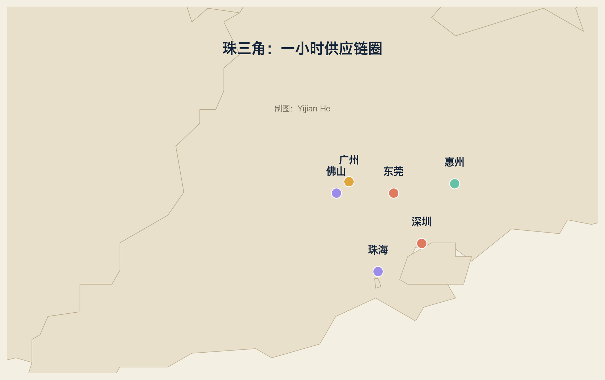

4.1 大区坐标
范围：珠三角九市（广州、深圳、佛山、东莞、珠海、惠州、中山、江门、肇庆）
人口：约 8600 万
GDP ：约 11.5 万亿元（2024，广东省约 14.2 万亿元，珠三角约占八成）
定位：中国电子制造的“心脏”+ 新能源汽车第二极
关键词：一小时供应链圈
珠三角与长三角的分工：
长三角：重、精、长周期（半导体、大飞机、大化工、整车）
珠三角：轻、快、短周期（电子、消费硬件、新能源车、机器人）
4.2 城市模板：深圳
角色：中国电子与硬科技的“首都”
代表企业：华为（2024 年营收 8621 亿元）、比亚迪（7771 亿元）、
大疆、汇川技术（370 亿元）、腾讯、立讯精密
产业链：消费电子 → 通信 → 新能源车 → 机器人 → 金融
为什么：
1980 特区 → 1990 电子代工 → 2000 自主品牌 → 2010 新能源 → 2020 具身智能
特点：市场驱动 + 政府配套，深圳是“中国模式”的默认形态
4.3 城市模板：东莞
角色：全球 3C 制造的“总装车间”
代表企业：OPPO、vivo、华为终端、立讯精密、漫步者
为什么：
香港订单 → 深圳研发 → 东莞量产
一小时车程内找齐模具、外壳、电池、屏幕、摄像头
挑战：成本上升，部分产能转向越南、印度
4.4 城市模板：广州
角色：整车 + 贸易 + 港口
代表企业：广汽集团、小鹏汽车、南沙汽车码头、华南理工系创业
特点：广州是珠三角的“商贸底盘”，深圳负责创新，广州负责流通
4.5 城市模板：佛山、珠海、惠州
佛山：家电之都
代表：美的（2024 年营收约 4090 亿元）、格兰仕、伊之密、科达制造
定位：全球最大的家电制造集群之一 + 注塑/压铸机械
为什么：顺德民营经济 + 家电配套完整
珠海：空调与打印
代表：格力电器、纳思达（打印机）、英搏尔（电驱）、丽珠集团
定位：空调与打印耗材的全球节点
惠州：电池与显示
代表：亿纬锂能、TCL、伯恩光学（手机玻璃）
定位：圆柱电池 + 显示 + 精密玻璃
4.6 一小时供应链圈
为什么珠三角能做到“今天下午下单，明天上午到货”？
1. 距离：九市半径约 150 公里，高速路网密集
2. 分工：深圳出方案，东莞出外壳，佛山出模具，广州出物流
3. 信息：华强北市场 + 行业微信群 + 即时物流
4. 库存：备件商在园区内设仓
这就是“集群效应”在中国最极端的形态。
4.7 珠三角的挑战
1. 成本：土地、人工、电费持续上升
2. 转移：越南、印度、墨西哥分流组装环节
3. 升级：从“组装”到“设计+制造”需要补研发
4. 竞争：长三角在半导体、新能源上更重
珠三角的答案不是守住组装，而是像华为、比亚迪那样：把“快”变成“研发快”。
本章练习
1. 画出深圳一家消费电子公司的供应链（零件→组装→出口）
2. 比较东莞与越南的制造成本结构（公开资料）
3. 用企业模板给大疆填一张卡
词汇笔记（Vokabelnotiz）
| 中文 | Deutsch | English |
|---|---|---|
| 珠三角 | Perlflussdelta | Pearl River Delta |
| 一小时供应链圈 | Ein-Stunden-Lieferkreis | One-hour supply circle |
| 总装车间 | Endmontagewerkstatt | Final assembly shop |
| 代工 | Auftragsfertigung | Contract manufacturing |